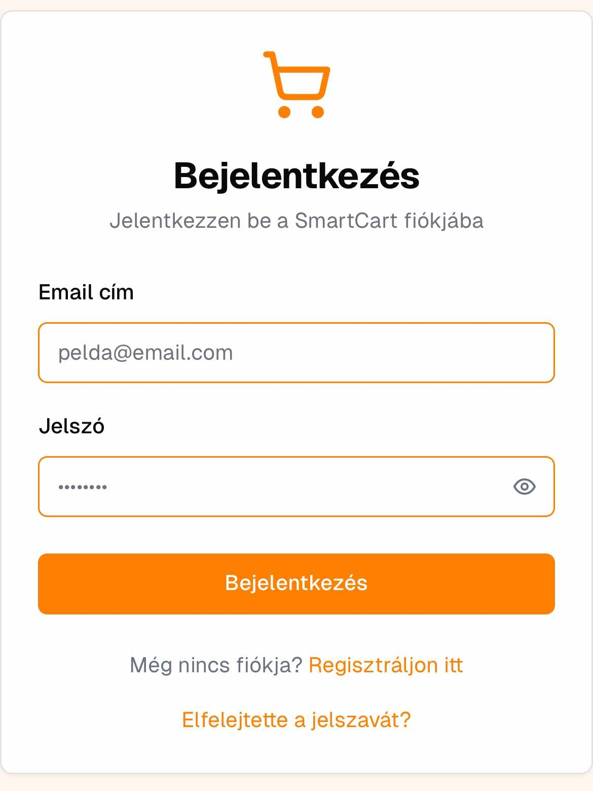

SRS Dokumentum
1. Bevezetés
1.1 Célkitűzés
A szoftver célja hogy a felhasználók bevásárlásaik és készleteik kezelését egyszerűbbé, átláthatóbbá és
hatékonyabbá tegye. A dinamikus ajánlások, ár-összehasonlítás és táplálkozási figyelés révén a felhasználók
időt és pénzt spórolhatnak, valamint egészségesebb döntéseket hozhatnak.
1.2 Probléma megfogalmazása
Sok felhasználó nehezen követi nyomon a háztartási készleteit, és gyakran szembesül azzal, hogy egyes
termékek lejárnak vagy elfogynak. Az árak összehasonlítása és az akciók keresése szintén időigényes.
Emellett a közös bevásárlólisták kezelése és a táplálkozási szokások figyelése nehézséget jelenthet,
különösen több személy részvételével.
1.3 Célközönség
Az alkalmazást elsősorban azoknak a felhasználóknak szánjuk, akik rendszeresen vásárolnak és szeretnék
egyszerűsíteni a bevásárlással kapcsolatos teendőket. Családok, párok, valamint egészségtudatos emberek
számára különösen hasznos, de általánosan
bárki számára előnyt jelenthet.
2. Áttekintés
2.1 Termék környezete
Az alkalmazás egy modern okostelefonos platformra épül, iOS és Android operációs rendszerekre optimalizáltan.
Működéséhez internetkapcsolat szükséges, mivel adatokat tölt le különböző forrásokból, mint például üzleti
akciók és ár-összehasonlító rendszerek. A felhasználók személyes eszközeik (telefonok, tabletek)
segítségével érik el, és a közösségi interakció lehetőségét is kihasználhatják
2.2 Legfontosabb funkciók
- Bevásárlólisták kezelése: Dinamikusan frissíthető és kategorizálható bevásárlólisták, amelyek segítik a
vásárlás folyamatát.
- Készletfigyelés: A felhasználók nyomon követhetik otthoni készleteiket, és értesítéseket kapnak a
kifogyó vagy lejáró termékekről.
- Ár-összehasonlítás: Különböző üzletek árait hasonlítja össze, hogy a felhasználók megtalálják a legjobb
ajánlatokat.
- Táplálkozási és kalóriafigyelés: Az alkalmazás segíti az egészséges étrend kialakítását
kalóriaszámlálással és táplálkozási
adatokkal.
- Receptek és közösségi interakció: Felhasználók recepteket oszthatnak meg, és bevásárlólistákat
használhatnak közösen.
2.3 A felhasználók jellemzői
A célközönség olyan felhasználók, akik rendszeresen bevásárolnak és figyelmet fordítanak háztartásuk
készleteire, egészséges életmódra törekednek, vagy átláthatóbbá szeretnék tenni bevásárlási szokásaikat.
Ezen felhasználók gyakran közösségben élnek, mint családok vagy párok, akik a közös bevásárlólisták és
készletkezelés funkciókat kihasználják.
2.4 Korlátozások
- Internetes kapcsolat szükségessége: Az alkalmazás számos funkciója, mint például az ár-összehasonlítás
és akciók megjelenítése internetkapcsolatot igényel.
- Adatvédelmi követelmények: A felhasználói szokások figyelése és a helymeghatározás alkalmazása
adatvédelmi kihívásokat jelenthet.
- Korlátozott platform támogatás: Csak iOS és Android rendszereken működik.
Feltételezések és függőségek
- Adatforrások: Az árak és akciók megjelenítéséhez külső forrásokhoz (üzletek adatbázisaihoz) szükséges
hozzáférés.
- Felhasználói szokások: Az alkalmazás a felhasználók viselkedéséből származó adatokat használ, hogy
dinamikus ajánlásokat tegyen, feltételezve, hogy ezek az adatok elérhetők.
- Eszköz kompatibilitás: Feltételezzük, hogy a felhasználók rendelkeznek olyan eszközökkel, amelyek
támogatják az alkalmazás futtatását (okostelefon vagy tablet internetkapcsolattal).
2.6 A követelmények csoportosításának szempontjai
A követelményeket a következő csoportokba soroljuk:
- Funkcionális követelmények: Ide tartoznak az alkalmazás alapvető funkciói, mint a bevásárlólisták
kezelése, készletfigyelés ár-összehasonlítás, stb.
- Nem funkcionális követelmények: Teljesítménnyel, biztonsággal, adatvédelemmel kapcsolatos elvárások.
- Külső interfészek: A szoftver kapcsolódása külső rendszerekhez (pl. ár-adatbázisok, boltok API-jai).
- Korlátozások: Az alkalmazás működési korlátai, mint például a platformtámogatás és a szükséges eszközök.
3. Rendszer funkciói
3.1 Bevásárlólisták kezelése
Leírás: Dinamikusan frissíthető és kategorizálható bevásárlólisták, amelyek segítik a vásárlás folyamatát.
3.1.1 Lista létrehozása és szerkesztése
- Felhasználói műveletek:
- A felhasználó új bevásárlólistát hozhat létre egy megadott névvel (pl. "Hétvégi bevásárlás"), és kiválaszthat egy kategóriát (pl. élelmiszerek, háztartási cikkek).
- Lista meglévő elemeinek szerkesztése, pl. név, kategória módosítása.
- Bemenetek: Lista neve, kategória választása.
- Érvényesítések:
- A lista neve nem lehet üres, legalább 3 karakterből kell állnia.
- Kategória kiválasztása kötelező.
- Kimenetek és állapotváltozás: Új lista megjelenítése a fő képernyőn, frissített lista állapota és szerkesztett adatok tárolása.
3.1.2 Termékek hozzáadása és eltávolítása
- Felhasználói műveletek:
- Új termék hozzáadása a listához név, kategória, mennyiség és egység megadásával.
- Már meglévő termékek mennyiségének és adataiknak szerkesztése.
- Termékek törlése a listából.
- Bemenetek: Terméknév, kategória, mennyiség, egység.
- Érvényesítések:
- A terméknév legalább 2 karakter hosszú legyen.
- Mennyiség pozitív szám, egység megadása kötelező.
- Kimenetek és állapotváltozás: A lista azonnali frissítése a fő képernyőn, eltávolított termékek törlése a memóriából.
3.1.3 Közös lista használata
- Felhasználói műveletek:
- A felhasználó megoszthatja a listát ismerősökkel (e-mail vagy alkalmazáson belüli meghívó küldésével).
- Meghívott felhasználók a saját eszközeiken megtekinthetik, szerkeszthetik és bővíthetik a megosztott listát.
- Bemenetek: Meghívott felhasználó e-mail címe, jogosultságok beállítása (pl. csak megtekintés vagy szerkesztés engedélyezése).
- Érvényesítések:
- Érvényes e-mail cím szükséges meghívás esetén.
- A meghívott felhasználó alkalmazásfiókkal rendelkezzen.
- Kimenetek és állapotváltozás: Meghívó küldése, listán belüli változtatások valós idejű szinkronizálása az összes meghívott eszközön.
3.1.4 Automatikus frissítések
- Leírás: A rendszer automatikusan frissíti a bevásárlólistát, figyelembe véve a felhasználó korábbi vásárlásait és a készleten lévő termékek állapotát.
- Felhasználói műveletek: Az alkalmazás automatikusan javaslatokat ad a felhasználó számára a listához adható termékekről a korábbi vásárlások alapján.
- Kimenetek: Dinamikus javaslatok megjelenítése a bevásárlólista szerkesztő képernyőn, termékek automatikus hozzáadása a listához, ha kifogynak a készletből.
3.2 Készletkezelés és figyelmeztetések
Leírás: A rendszer segíti a felhasználókat otthoni készleteik nyilvántartásában és figyelmeztetéseket biztosít a lejáró és alacsony készletű termékekről. Emellett részletes statisztikákat nyújt a felhasználó fogyasztási szokásairól.
3.2.1 Termékek nyilvántartása
- Felhasználói műveletek:
- Új termék hozzáadása a készlethez manuálisan vagy a bevásárlás során automatikusan.
- Meglévő termék mennyiségének frissítése, lejárati dátum módosítása.
- Bemenetek: Terméknév, kategória, mennyiség, egység, lejárati dátum.
- Érvényesítések:
- Terméknév nem lehet üres, és legalább 2 karakter hosszúságú.
- Lejárati dátum nem lehet korábbi a jelenlegi dátumnál.
- Mennyiség csak pozitív szám lehet.
- Kimenetek és állapotváltozás: A rendszer tárolja a készleten lévő termékek adatait, és azok elérhetők a készlet áttekintő felületen.
3.2.2 Lejárati és kifogyási figyelmeztetések
- Felhasználói műveletek: A rendszer automatikusan ellenőrzi a készleten lévő termékek lejárati dátumát és mennyiségét, figyelmeztetve a felhasználót, ha egy termék hamarosan lejár vagy közel van a kifogyáshoz.
- Értesítési feltételek:
- Ha egy termék lejárati dátuma 3 napon belül esedékes, figyelmeztető értesítést küld a rendszer.
- Ha egy termék mennyisége egy előre meghatározott alacsony szint alá csökken, a rendszer kifogyási értesítést küld.
- Kimenetek:
- Push értesítések a közeledő lejáratról és alacsony készletről.
- Értesítések megjelenítése az alkalmazás főképernyőjén.
3.2.3 Készletértékelés
- Leírás: A rendszer statisztikákat készít a felhasználó fogyasztási szokásairól, bemutatva, hogy milyen termékek fogynak el gyakran, illetve melyek maradnak meg hosszabb ideig.
- Felhasználói műveletek:
- A felhasználó hozzáférhet havi és éves összegző statisztikákhoz a készleten lévő termékek fogyásáról.
- Termékek megtekintése, amelyek gyakran fogynak el, vagy hosszabb ideig tárolva vannak.
- Kimenetek:
- Diagramok és listák, amelyek bemutatják a leggyakrabban fogyó és a legritkábban használt termékeket.
- Statisztikák elérhetők az alkalmazás "Készletértékelés" menüpontjában.
3.3 Ár-összehasonlítás
Leírás: A rendszer különböző boltokból gyűjt árakat, hogy segítse a felhasználót a vásárlás során a legjobb árak megtalálásában, akciós ajánlatok követésében, és bevásárlólistához kapcsolódó kedvező árú termékek kiválasztásában.
3.3.1 Termék árak megjelenítése
- Felhasználói műveletek:
- A felhasználó megtekintheti egy adott termék aktuális árait különböző boltokból, egy áttekinthető árösszehasonlító listában.
- A felhasználó szűrhet boltokra, vagy kiválaszthatja a legkedvezőbb árú lehetőséget.
- Bemenetek: Terméknév vagy termékkategória kiválasztása.
- Érvényesítések:
- A keresett terméknek rendelkezésre kell állnia a rendszer adatbázisában ahhoz, hogy árakat tudjon megjeleníteni.
- Kimenetek:
- A termék aktuális árai különböző boltokban, megjelenítve az alkalmazás árösszehasonlító felületén.
- Az árak listája a felhasználó által kiválasztott szűrők alkalmazásával jelenik meg.
3.3.2 Akciók megjelenítése
- Felhasználói műveletek: A felhasználó értesítést kap, ha egy közeli boltban akciós a kívánt termék.
- Bemenetek: Felhasználói helymeghatározás (GPS vagy manuálisan megadott hely), illetve a követett termékek listája.
- Érvényesítések:
- Az akciós értesítések fogadásához a felhasználónak engedélyeznie kell a helymeghatározást, vagy meg kell adnia a preferált boltokat.
- Kimenetek:
- Push értesítések a közeli akciókról, amelyek elérhetők a felhasználó közelében lévő boltokban.
- Az értesítések megjelenítése az alkalmazás főképernyőjén is.
3.3.3 Legjobb ajánlatok keresése
- Leírás: A rendszer automatikusan keresésbe kezd a felhasználó bevásárlólistáján szereplő termékek legjobb árai után, és ajánlatokat javasol, hogy a felhasználó a lehető legkedvezőbb áron vásárolhassa meg a termékeket.
- Felhasználói műveletek:
- A felhasználó bevásárlólistáján szereplő termékekhez automatikusan megjelennek a legjobb ajánlatok.
- A felhasználó kiválaszthatja a listában a legolcsóbb opciókat egy-egy termékhez, vagy a listát az árak alapján rendezheti.
- Kimenetek:
- Ajánlatok és kedvezmények megjelenítése a felhasználó bevásárlólistáján.
- A legjobb árak megjelölése és összegzése a végösszeg csökkentése érdekében.
3.4 Táplálkozási- és kalóriafigyelés
Leírás: A rendszer segíti a felhasználót táplálkozási és kalóriafigyelésben, megjeleníti a termékek tápanyagtartalmát, kalóriaszámlálást tesz lehetővé, és étkezési szokások alapján ajánl recepteket és termékeket.
3.4.1 Termékek tápanyagtartalmának megjelenítése
- Felhasználói műveletek:
- A felhasználó megtekintheti a bevásárlólistán vagy a készleten lévő termékek tápanyagtartalmát, beleértve a kalória-, zsír-, fehérje- és szénhidráttartalmat.
- A felhasználó szűrheti a listát tápanyagok alapján, hogy könnyen azonosítsa a számára megfelelő termékeket.
- Bemenetek: Terméknév, kiválasztott tápanyag szűrés.
- Érvényesítések:
- A rendszer csak olyan termékekhez jelenít meg tápanyagtartalmat, amelyek rendelkeznek ezzel az információval az adatbázisban.
- Kimenetek:
- A termékek tápanyagtartalmának részletes megjelenítése a bevásárlólistán vagy a készleten.
- A szűrt terméklista megjelenítése tápanyagtartalom alapján.
3.4.2 Étkezési napló
- Felhasználói műveletek:
- A felhasználó rögzítheti napi étkezéseit, beleértve az egyes ételek és termékek tápanyagtartalmát és kalóriabevitelét.
- A felhasználó napi vagy heti összefoglalót kérhet a kalóriabevitelről.
- Bemenetek: Elfogyasztott termékek neve, mennyiség, és adagok száma.
- Érvényesítések:
- A napi kalóriabevitel rögzítéséhez minden étkezésnek tartalmaznia kell legalább egy terméket vagy receptet.
- Kimenetek:
- Napi étkezési napló, amely összegzi az elfogyasztott kalóriákat és tápanyagokat.
- Heti összesített kalória- és tápanyagfogyasztás grafikus megjelenítése.
3.4.3 Ajánlások és szokások figyelése
- Leírás: A rendszer nyomon követi a felhasználó étkezési szokásait, és ezek alapján személyre szabott recepteket és termékeket ajánl, amelyek megfelelnek a táplálkozási céloknak.
- Felhasználói műveletek:
- A felhasználó beállíthatja a táplálkozási céljait, pl. fogyás, izomtömeg növelés vagy egészségesebb étkezés.
- Az alkalmazás automatikusan ajánlhat alacsony kalóriatartalmú, magas fehérjetartalmú vagy más táplálkozási céloknak megfelelő termékeket és recepteket.
- Bemenetek: Felhasználói célok (pl. fogyás, egészséges táplálkozás), korábbi étkezési napló adatai.
- Kimenetek:
- Receptek és termékek ajánlása a táplálkozási célok és a felhasználói szokások alapján.
- Testreszabott tippek megjelenítése a felhasználó céljainak megfelelő táplálkozási szokások kialakításához.
3.5 Helymeghatározás alapú funkciók
Leírás: A rendszer GPS alapú funkciókat kínál a felhasználók számára, amelyek segítségével helyalapú ajánlatokat láthatnak, és navigálhatnak a legközelebbi boltokhoz, ahol a szükséges termékek elérhetők.
3.5.1 Bolti ajánlatok megjelenítése
- Felhasználói műveletek:
- A felhasználó a közelében lévő boltok aktuális ajánlatait láthatja, beleértve a bevásárlólistáján szereplő termékekre vonatkozó akciókat.
- A felhasználó szűrhet boltok szerint, vagy megadhatja, hogy csak a legközelebbi üzletek ajánlatait kívánja látni.
- Bemenetek: GPS helymeghatározás vagy manuálisan megadott helyszín; szűrési preferenciák (pl. üzletek vagy termékek szerint).
- Érvényesítések:
- A funkció használatához engedélyezni kell a helymeghatározást, vagy manuálisan meg kell adni a felhasználó helyzetét.
- Kimenetek:
- A közelben lévő boltok aktuális ajánlatai, különös tekintettel a felhasználó bevásárlólistáján szereplő termékekre.
- Szűrt ajánlatok megjelenítése a felhasználó által megadott preferenciák alapján.
3.5.2 Navigáció a legközelebbi bolthoz
- Felhasználói műveletek:
- A felhasználó megtekintheti a legközelebbi boltok térképes megjelenítését, ahol a bevásárlólistáján szereplő termékek elérhetők.
- A felhasználó útvonalat kaphat a kiválasztott bolt eléréséhez, beleértve a gyalogos vagy autós navigációs lehetőségeket.
- Bemenetek: GPS helymeghatározás vagy manuálisan megadott helyszín; a felhasználó bevásárlólistája.
- Érvényesítések:
- A navigációs funkció használatához engedélyezni kell a helymeghatározást, vagy manuálisan meg kell adni a felhasználó helyzetét.
- A bevásárlólistán szereplő termékek elérhetősége szükséges a kijelölt boltokban.
- Kimenetek:
- Térkép és útvonal a legközelebbi bolt(ok)hoz, ahol a bevásárlólistán lévő termékek elérhetők.
- Alternatív útvonalak vagy boltok javaslata, ha a felhasználó több lehetőséget is szeretne mérlegelni.
3.6 Receptekkel kapcsolatos funkciók
Leírás: A rendszer lehetőséget biztosít a felhasználóknak receptek létrehozására, megosztására, és receptekhez kapcsolódó bevásárlólisták automatikus generálására. Emellett közösségi interakciós funkciókat is nyújt, mint az értékelés és hozzászólások.
3.6.1 Receptek megosztása
- Felhasználói műveletek:
- A felhasználó létrehozhat egy új receptet, beleértve az összetevőket, elkészítési útmutatót és képeket.
- A felhasználó megoszthatja receptjét más felhasználókkal a platformon.
- A felhasználó módosíthatja vagy törölheti saját receptjeit.
- Bemenetek: Recept neve, hozzávalók, elkészítési útmutató, opcionális képek és címkék.
- Érvényesítések:
- A recept megosztásához minden kötelező mezőt (név, hozzávalók, elkészítési útmutató) ki kell tölteni.
- A feltöltött képek fájlformátuma és mérete ellenőrzött.
- Kimenetek:
- A megosztott recept megjelenik más felhasználók számára a rendszerben.
- Visszajelzés a sikeres közzétételről vagy a szükséges javításokról.
3.6.2 Receptekhez bevásárlólista
- Felhasználói műveletek:
- A felhasználó kiválaszthat egy receptet, amely alapján az alkalmazás automatikusan létrehoz egy bevásárlólistát az összetevők alapján.
- A felhasználó módosíthatja a generált bevásárlólistát, eltávolíthat vagy hozzáadhat tételeket.
- Bemenetek: Recept neve és hozzávalók listája.
- Érvényesítések:
- A bevásárlólista létrehozásához a recept összetevőlistájának minden tétele elérhető az adatbázisban.
- Kimenetek:
- A recept összetevőiből generált bevásárlólista, amely a felhasználó bevásárlólistái között megjelenik.
- Visszajelzés a sikeres bevásárlólista generálásáról.
3.6.3 Közösségi interakció
- Felhasználói műveletek:
- A felhasználó értékelheti mások receptjeit, és csillagokkal vagy pontszámokkal rangsorolhatja azokat.
- A felhasználó hozzászólásokat fűzhet mások receptjeihez, megoszthatja véleményét és javaslatait.
- A felhasználó módosíthatja vagy törölheti saját értékeléseit és hozzászólásait.
- Bemenetek: Értékelés (pl. csillagok száma), szöveges hozzászólás.
- Érvényesítések:
- A hozzászólások moderálásra kerülhetnek a nem megfelelő tartalmak kiszűrése érdekében.
- Értékeléshez kötelező a csillag vagy pontszám kiválasztása.
- Kimenetek:
- Az értékelés és hozzászólás megjelenik az adott recept alatt, elérhetővé téve más felhasználók számára.
- Visszajelzés a sikeres értékelésről vagy hozzászólásról, illetve szükség esetén moderálási figyelmeztetés.
3.7 Közösségi funkciók
Leírás: A közösségi funkciók célja, hogy a felhasználók kapcsolatot teremtsenek másokkal az alkalmazáson belül, recepteket, akciókat és bevásárlólistákat osszanak meg, valamint értesítéseket küldjenek egymásnak a közös vásárlási élmény érdekében.
3.7.1 Barátok meghívása
- Felhasználói műveletek:
- A felhasználó meghívhatja ismerőseit az alkalmazás használatára egy hivatkozással, amely SMS-ben, iMessage-ben, Messengerben stb. küldhető el.
- A meghívott személy regisztrációja után automatikusan hozzáadódik a meghívó felhasználó barátai közé.
- Az új baráti kapcsolat létrejötte után a felhasználók hozzáférnek a közös funkciókhoz, mint a közös bevásárlólista és az akciók megosztása.
- Bemenetek: Meghívási link generálása és küldési mód kiválasztása.
- Érvényesítések:
- Érvényes meghívó link generálása, amely az App Store vagy Google Play oldalára irányítja a meghívottat.
- Kimenetek: Visszaigazolás a meghívó sikeres elküldéséről és a barát sikeres hozzáadásáról.
3.7.2 Recept megosztása
- Felhasználói műveletek:
- A felhasználó megoszthatja saját receptjeit barátaival vagy nyilvánosan az alkalmazáson belüli receptmegosztó felületen.
- Megosztás előtt a felhasználó kiválaszthatja, hogy a recept privát vagy nyilvános legyen.
- Bemenetek: Recept neve, hozzávalók, elkészítési idő, elkészítési útmutató, valamint megosztási beállítások (privát vagy nyilvános).
- Érvényesítések:
- A megosztani kívánt recept összes szükséges mezője ki legyen töltve.
- A recept nyilvános megosztása esetén a rendszer ellenőrizze a tartalom helyességét és relevanciáját.
- Kimenetek: A recept megosztása a kiválasztott beállítások szerint, elérhetővé téve barátok vagy a nyilvános közösség számára.
3.7.3 Akció megosztása
- Felhasználói műveletek:
- A felhasználó értesítést küldhet barátainak aktuális akciókról az alkalmazáson belül vagy közvetlen üzenetben a privát chatablakban.
- Az akció megosztásakor a felhasználó megadhatja a termék nevét, árát és az akció lejárati dátumát.
- Bemenetek: Termék neve, ára, akció lejárati dátuma, valamint a küldési mód (értesítés vagy privát üzenet).
- Érvényesítések:
- Csak a helymeghatározás alapján aktuális akciók megosztása engedélyezett, amelyek relevánsak a felhasználók számára.
- Érvényes lejárati dátum és termékadatok megadása kötelező.
- Kimenetek: Az akció értesítése elérhetővé válik a címzett felhasználók számára az alkalmazáson belül.
3.7.4 Közös lista
- Felhasználói műveletek:
- A felhasználók közösen kezelhetnek egy bevásárlólistát, amelyhez minden résztvevő hozzáadhat vagy törölhet tételeket.
- Az alkalmazás valós időben szinkronizálja a listát, így minden résztvevő naprakész információval rendelkezik.
- A lista frissítésekor a rendszer értesítést küld a résztvevőknek a változásokról.
- Bemenetek: Listaelemek hozzáadása vagy törlése, értesítési beállítások.
- Érvényesítések:
- Az értesítési beállítások engedélyezése, hogy minden résztvevő értesítést kapjon a lista frissítéseiről.
- Kimenetek:
- Valós idejű frissítés és értesítések a közös bevásárlólistán végzett változtatásokról.
- A lista elemeinek azonnali szinkronizálása minden csatlakozott felhasználó eszközén.
4. Használhatóság
4.1 Betanulási idő
- Kezdő felhasználók: Az alkalmazás egyszerű és intuitív felülete lehetővé teszi, hogy a kezdő
felhasználók minimális betanulási idővel (kb. 15-30 perc) elsajátítsák az alapfunkciókat, például a
bevásárlólista kezelését és a készletfigyelést.
- Gyakorlott felhasználók: A gyakorlott felhasználók számára az alkalmazás funkcióinak teljes körű
kihasználása rövid, kb. 5-10 perc alatt elsajátítható, különös tekintettel az összetettebb funkciókra,
mint az ár-összehasonlítás és a közös listakezelés.
4.2 Feladatvégrehajtás ideje
- Jelenlegi módszerek: A manuális bevásárlólista használata és a készletek kézi nyilvántartása, bevitele
jelentős időt vehet igénybe (átlagosan 15-20 perc lista létrehozására és frissítésére).
- Más rendszerek: Hasonló alkalmazások használata esetén is 10-15 perc lehet egy lista kezelése vagy az
otthoni készlet feljegyzése.
- Fejlesztendő rendszer: Az új rendszer lehetővé teszi, hogy a felhasználók 5-10 perc alatt hozzanak létre
és frissítsenek bevásárlólistákat, illetve kezeljék a készleteiket, mivel a rendszer dinamikus
ajánlásokat és automatikus figyelmeztetéseket biztosít.
4.3 Kezdő felhasználókat támogató funkciók
- Interaktív bemutatók: Az alkalmazás indításakor rövid interaktív bemutatóvideó segíti a felhasználókat
az alapvető funkciók (lista létrehozása, készletkezelés) gyors megismerésében.
- Segédletek és tippek: A rendszer kontextusérzékeny segítségnyújtási funkcióval van ellátva, amely minden
képernyőn tippeket kínál az adott funkció használatával kapcsolatban.
- Egyszerűsített felület: A felhasználói felület egyszerűsített, logikusan tagolt kategóriákkal
rendelkezik, amelyek segítik a kezdő felhasználókat is az eligazodásban.
- Egyértelmű piktogramok: A felhasználói felületen található ikonok, menüpontok gombjai jól látható helyen
helyezkednek el és egyértelmű megjelenést kaptak, hogy a felhasználói élmény még jobb legyen.
4.4 Betanulási lehetőségek
- Online dokumentáció és súgó: Az alkalmazáshoz részletes online dokumentáció és súgórendszer érhető el,
amely lépésről lépésre mutatja be a funkciókat.
- Videó tutoriálok: A fejlesztői csapat videó tutoriálokat biztosít a legfontosabb funkciók bemutatására.
- Támogatás: A felhasználók bármikor kérhetnek online támogatást a fejlesztőktől hibajegy nyitásával.
4.5 Felhasználói felület ismerőssége
- Hasonlóságok más rendszerekkel: Az alkalmazás felülete hasonlít más bevásárlási alkalmazásokhoz, így az
olyan felhasználók, akik hasonló rendszereket használtak, könnyen átállhatnak erre a platformra.
- Egyedi megoldások: A dinamikus ajánlások és a közös lista kezelése egyedi megoldásokat kínál, amelyek
újszerűek, de könnyen elsajátíthatók.
4.6 Összhang más alkalmazásokkal
- Más alkalmazásokkal való integráció: A rendszer kompatibilis más lista- és jegyzetkészítő
alkalmazásokkal (pl. Google Keep, AnyList), így a felhasználók meglévő listáikat könnyen átvihetik az
alkalmazásba.
5. Megbízhatóság
5.1 Rendelkezésre állás
- Teljes rendelkezésre állás: Az alkalmazásnak az év 99,5%-ában rendelkezésre kell állnia, hogy a
felhasználók zökkenőmentesen elérhessék a funkciókat. Ez évente legfeljebb 43,8 órás leállást tesz
lehetővé.
- Karbantartási idő: A technikai karbantartásokat éjszakai időszakban kell elvégezni (pl. havonta egy
alkalommal, legfeljebb 2 órás időtartamban), hogy minimalizálják a felhasználókra gyakorolt hatást.
- Korlátozott használhatóság: Karbantartási idő alatt a rendszer alapfunkciói (például a bevásárlólista
megtekintése) korlátozottan elérhetők maradnak, de az ár-összehasonlítás és online frissítések leállnak.
5.2 MTBF (Mean Time Between Failures)
- Átlagos idő a hibák között: A rendszernek legalább 1000 órás MTBF-t kell biztosítania, azaz átlagosan
legalább 1000 óra működést várunk el hiba nélkül. Ez biztosítja a rendszer hosszú távú stabilitását és
megbízhatóságát.
5.3 MTTR (Mean Time To Repair)
- Átlagos hibaelhárítási idő: Ha hiba lép fel, az átlagos javítási idő (MTTR) nem haladhatja meg a 2 órát,
azonban ez az idő a hiba súlyosságától is függ. Ettől függetlenül a fejlesztők gyorsan reagálnak az
esetleges hibákra, és a felhasználók számára mihamarabb visszaáll a rendszer teljes funkcionalitása.
5.4 A rendszer eredményeinek pontossága
- Adatok pontossága: Az alkalmazás által megjelenített adatok (pl. árak, akciók, lejárati dátumok)
pontosságát 95%-os szinten kell biztosítani. A külső adatforrások esetleges pontatlansága esetén is
törekedni kell az információk naprakész és helyes megjelenítésére.
- Táplálkozási és kalóriaadatok pontossága: A rendszer által megadott táplálkozási és kalóriaadatok
minimum 98%-os pontossággal kell hogy rendelkezzenek, figyelembe véve a termékekről rendelkezésre álló
legfrissebb tápérték adatokat.
6. Teljesítmény
6.1 Válaszidők
- Általános válaszidők: Az alkalmazás alapfunkcióinak (például a bevásárlólisták betöltése,
készletkezelés) válaszideje nem haladhatja meg a 2 másodpercet normál használat esetén.
- Kritikus funkciók válaszideje: Az ár-összehasonlító funkció és az akciós ajánlatok betöltése legfeljebb
5 másodpercet vehet igénybe, figyelembe véve a külső adatforrásoktól való függőséget.
- Receptek megosztása és betöltése: A felhasználók által feltöltött receptek és hozzávalók listájának
betöltése 3 másodpercen belül megtörténik, még nagyobb adatbázis esetén is.
6.2 Teljesítmény korlátozott használhatóság idején
- Karbantartás alatti teljesítmény: Karbantartási időszakokban a rendszer alapfunkciói (például a
bevásárlólista megtekintése) elérhetők maradnak, és a válaszidő nem haladhatja meg az 5 másodpercet. Az
ár-összehasonlító és akciós funkciók ideiglenesen letiltásra kerülnek.
- Csökkentett terhelésű üzemmód: A karbantartás alatt a rendszer erőforrás-igényei optimalizálódnak, hogy
a felhasználók minimális funkciókkal is használhassák az alkalmazást.
6.3 Erőforrás-igények
- Processzor sebesség: A rendszer minimális követelménye egy 1,5 GHz-es processzor, amely biztosítja az
alkalmazás zavartalan működését, különösen nagyobb adatmennyiség kezelése esetén (pl. ár-összehasonlítás
vagy akciós termékek lekérdezése).
- Memóriaigény: Az alkalmazás futtatásához minimum 2 GB RAM szükséges, de a jobb teljesítmény érdekében
javasolt a 4 GB RAM használata. Ez garantálja a többfeladatos működést, különösen, ha a felhasználó
párhuzamosan más alkalmazásokat is használ.
- Tárhelyigény: A rendszer telepítéséhez és adatainak tárolásához minimum 500 MB szabad tárhely szükséges.
Az alkalmazás további 200 MB-ot foglalhat le cache és log fájlok számára, amelyeket időszakosan tisztít
a rendszer.
- Sávszélesség: Az alkalmazás optimális működéséhez legalább 1 Mbps internetkapcsolat szükséges. A nagyobb
adatmennyiség (például receptek és termékadatok szinkronizálása) gyorsabb kapcsolattal (legalább 5 Mbps)
történik hatékonyabban.
7. Támogatottság
7.1 Üzemeltetés
Az alkalmazásnak lesz egy minimum operációs rendszeri követelménye, android esetében az Android 14, Apple telefonok esetében az IOS 16. Ha a felhasználó nem kívánja letölteni az alkalmazást, egy
korlátozott funkciókkal ellátott verzió a weben is elérhető lesz.
7.2 Elnevezési konvenciók, kódolási szabványok
- Kódolási szabványok: A fejlesztőknek be kell tartaniuk az általánosan elfogadott kódolási szabványokat,
hogy a karbantartási műveletek során könnyen érthető és követhető legyen a kód. Ez segít abban, hogy a
szoftver karbantartói gyorsan azonosíthassák a problémákat és hibákat.
- Elnevezési konvenciók: Az alkalmazásban egységes elnevezési konvenciókat kell alkalmazni (például az
osztályok PascalCase, a változók camelCase formátumot használjanak), amelyek elősegítik a kód
olvashatóságát és karbantarthatóságát.
7.3 Karbantartóknak és üzemeltetőknek szükséges funkciók
- Adminisztrátori hozzáférés: A rendszer tartalmaz egy speciális adminisztrátori felületet, amely csak a
karbantartók és üzemeltetők számára elérhető. Ez a felület biztosít hozzáférést a naplókhoz,
konfigurációs beállításokhoz és az adatbázis-kezelési eszközökhöz.
- Felhasználói aktivitás követése: Az adminisztrátori felületen a karbantartók megtekinthetik a
felhasználói aktivitásokat, például a bevásárlólisták létrehozását, módosítását, és az
ár-összehasonlítás használatának gyakoriságát. Ezek az adatok segítik az esetleges hibák és
teljesítményproblémák nyomon követését.
7.4 Naplózás és hibakeresés
- Naplók generálása: A rendszer az alkalmazás működése során részletes naplókat készít minden jelentős
eseményről, beleértve a felhasználói tevékenységeket, hibákat, adatbázis műveleteket és API hívásokat.
Ezek a naplók segítenek a későbbi hibakeresésben és finomhangolásban.
- Hibajelentések: A naplók automatikusan hibajelentéseket generálnak súlyos hibák esetén, amelyeket a
karbantartók az adminisztrátori felületen keresztül azonnal láthatnak. A hibajelentések tartalmazzák a
hiba időpontját, az érintett funkciókat és a releváns naplóbejegyzéseket.
8. Tervezési korlátozások
8.1 Használandó programozási nyelvek
- Java és React Native: Az alkalmazás fejlesztéséhez Java-t fogunk használni a backend fejlesztéséhez, míg
a frontendhez a React Native-ot, hogy biztosítsuk a többplatformos támogatást (Android és iOS).
8.2 Fejlesztői környezet
- IntelliJ IDEA és Visual Studio Code: A fejlesztéshez az IntelliJ IDEA használjuk a backend oldalon
történő fejlesztésekhez, míg a frontend fejlesztéshez a Visual Studio Code-ot.
8.3 Újra felhasználható elemek
- Komponens- és osztálykönyvtárak: A fejlesztés során újra felhasználható külső könyvtárak beépítése fog
történni, különösen olyan bevásárlólista-kezelő és táplálkozásfigyelő API-k esetében, amelyek
megkönnyítik a feladatok gyorsabb megvalósítását.
- Backend komponensek: Az alkalmazás adatbáziskezelésére a Hibernate keretrendszer alkalmazása
kötelező, amely biztosítja az adatok hatékony tárolását és kezelését.
- Frontend komponensek: A felhasználói felület létrehozásához újra felhasználható React Native
komponensek, például React Navigation használata kötelező a navigációs rendszer megvalósításához.
8.4 Fejlesztési módszertan
- Agilis módszertan: A fejlesztés során kötelező az Agile Scrum módszertan alkalmazása, amely lehetővé
teszi a rendszeres iterációkat és a felhasználói visszajelzések alapján történő gyors módosításokat. Az
agilis ciklusokat 2 hetes sprintekben kell végrehajtani.
- Napi Scrum megbeszélések: Minden fejlesztési nap kezdete előtt egy 15 perces napi Scrum megbeszélés
tartandó, amelyen a csapat tagjai áttekintik az előző nap történéseit és meghatározzák a napi
célokat.
8.5 Platformspecifikus korlátozások
- Android és iOS támogatás: Alkalmazásunknak az Android és iOS operációs rendszereken is egyaránt jól kell
működnie, ezért figyelembe kell venni a platformspecifikus követelményeket, például az Android esetében
a GMD irányelvek, míg iOS-en a HIG betartását.
8.6 Külső szolgáltatások integrálása
- Helyalapú szolgáltatások: Az alkalmazásunkba integrálni kell a Google Maps vagy az Apple Maps helyalapú
szolgáltatásokat az üzletek és az abban aktív akciók megjelenítéséhez.
9. Online dokumentáció
Az alkalmazáshoz részletes online dokumentáció és súgórendszer érhető el, amely képekkel, lépésről lépésre
mutatja be a funkciókat.
10. Felhasznált kész komponensek
10.1 Vásárolt komponensek
10.1.1 Google Maps API
- Beszerzés körülményei: A helyalapú szolgáltatások megvalósításához szükséges a Google Maps API
megvásárlása. A szolgáltatás a Google által biztosított, és felhasználói helyek követésére, valamint
üzletek és akciók megjelenítésére szolgál.
- Költségek: A Google Maps API használata a forgalom alapján történik, és a díjak felhasználási arányban
növekednek. Kezdetben az API ingyenes havi kvótát biztosít, azonban nagyobb használat esetén az ár
növekedhet.
- Havi kvóta: Ingyenes havi kvóta 200 dollárig.
- Túlhasználati díj: 7-14 dollár/1000 kérés az ingyenes keret túllépése után.
- Licencelési és szabályok: Az API használatát a Google felhasználási feltételei szabályozzák, amelyek
megkövetelik a Google Maps logó feltüntetését az alkalmazásban, valamint biztosítják, hogy az API
adatokat csak jogszerű módon használják fel.
10.2 Szabad felhasználású komponensek
10.2.1 Apple Maps API
- Beszerzés körülményei: Az Apple Maps API integrálásához szükséges egy Apple fejlesztői fiók
regisztrálása, amely előfeltétele az API-k használatának. Az API-t ingyenesen biztosítják, de a
felhasználóknak meg kell felelniük az Apple Maps szolgáltatásra vonatkozó szabályoknak.
- Költségek: Az API használata ingyenes, de magas forgalom esetén korlátozásokat léptethetnek életbe,
amelyek csökkenthetik a szolgáltatás sebességét, vagy felárat szabhatnak ki bizonyos kérések után.
- Fejlesztői fiók díja: Az Apple fejlesztői fiók éves díja 99 USD.
- Licencelési és szabályok: Az Apple Maps API használatát az Apple Developer Program License Agreement
szabályozza, amely megköveteli a megfelelő forrásmegjelölést, és biztosítja, hogy az API-val
összegyűjtött adatokat a felhasználó beleegyezésével használják fel. Az Apple Maps API felhasználása
során a felhasználói adatvédelmi előírások betartása is szükséges, különösen a helyalapú
szolgáltatásokkal kapcsolatban.
10.2.2 React Native
- Forrás és felhasználás: A React Native egy nyílt forráskódú keretrendszer, amelyet a Facebook fejleszt
és tart fenn. Az alkalmazás felhasználói felületének létrehozására használatos, és ingyenesen elérhető a
GitHub-on.
- Felhasználás szabályai: A React Native felhasználásához be kell tartani az MIT licenc feltételeit, amely
lehetővé teszi a szabad felhasználást és módosítást, de megköveteli a szerzői jogi megjegyzés és a
licenc feltüntetését a forráskódban.
- Hatások és kötelezettségek: A React Native alkalmazása biztosítja a többplatformos támogatást (Android
és iOS), minimalizálja a fejlesztési költségeket, és csökkenti a karbantartási időt. Az MIT licenc nem
kötelezi a fejlesztőket jogdíjfizetésre vagy másköltségek viselésére.
10.2.3 React Navigation
- Forrás és felhasználás: A React Navigation egy szabadon felhasználható komponens, amely a React Native
projektekhez biztosít navigációs eszközöket. A GitHub-on elérhető, és széles körben használják
mobilalkalmazások fejlesztésére.
- Felhasználás szabályai: Az eszköz szintén MIT licenc alatt áll, amely lehetővé teszi a szabad
felhasználást és módosítást.
- Hatások és kötelezettségek: A React Navigation integrációja lehetővé teszi a többképernyős navigáció
könnyű kezelését, ami javítja a felhasználói élményt. A nyílt forráskódú licenc nem jár kötelező
költségekkel.
11. Interfészek
11.1 Felhasználói felület
Célcsoport: Az alkalmazás végfelhasználói, akik a bevásárlási és készletkezelési funkciókat szeretnék
kihasználni.
Funkciók:
- Termékkeresés és kategorizálás: A felhasználók könnyedén kereshetnek termékek között és kategóriákba
sorolhatják azokat a hatékony böngészés érdekében.
- Közös bevásárlólista: A felhasználók lehetőséget kapnak közös listák létrehozására és megosztására
családtagokkal vagy barátokkal.
- Ajánlások és értesítések: Az alkalmazás dinamikusan ajánlásokat tesz a felhasználók vásárlási szokásai
és a készletei alapján, valamint értesítéseket küld a kifogyó vagy lejáró árucikkekről.
- Helyalapú akciók: Az alkalmazás képes megjeleníteni az üzletek akcióit a felhasználó aktuális
tartózkodási helye alapján, növelve ezzel a felhasználói élményt.
- Receptek és táplálkozási információk: A felhasználók recepteket oszthatnak meg, és figyelemmel
kísérhetik a táplálkozási adataikat és a kalóriákat.
11.2 Fejlesztői/Karbantartói felület
Célcsoport: A fejlesztők és karbantartók, akik a rendszer működését és karbantartását végzik.
Funkciók:
- Rendszerfigyelés: A karbantartók nyomon követhetik a rendszer teljesítményét, a felhasználói aktivitást,
valamint az esetleges hibákat és leállásokat.
- Hibaelhárítási eszközök: A felület hozzáférést biztosít a rendszer naplóihoz, amelyek segítenek a hibák
azonosításában és javításában.
- Karbantartási feladatok: A karbantartók könnyedén elvégezhetik a szükséges feladataikat, mint például a
frissítések telepítése, a rendszerdokumentáció frissítése, és a felhasználói adatok kezelése.
- Új funkciók integrálása: A fejlesztők számára eszközök állnak rendelkezésre új funkciók fejlesztéséhez
és integrálásához, valamint a meglévő funkciók bővítéséhez.
- Biztonsági beállítások kezelése: A karbantartók kezelhetik a rendszer biztonsági beállításait, beleértve
a felhasználói jogosultságokat és az adatvédelmi szabályokat.
12. Alkalmazási szabályok
12.1 Kötelezően alkalmazandó szabványok
- GDPR (Általános Adatvédelmi Rendelet): Az alkalmazásnak meg kell felelnie az Európai Unió adatvédelmi
szabályainak, különösen a felhasználói adatok gyűjtése, tárolása és kezelése terén.
- WCAG (Web Content Accessibility Guidelines): A felhasználói felületnek meg kell felelnie a webes
hozzáférhetőségi irányelveknek, hogy a lehető legszélesebb körű felhasználói bázist szolgálja ki,
beleértve a fogyatékkal élő felhasználókat is.
- ISO/IEC 27001: Az információbiztonság irányítási rendszerének követelményeit tartalmazza, amely
biztosítja, hogy az alkalmazás és a felhasználói adatok védve legyenek a nem kívánt hozzáféréstől és
adatlopástól.
- PCI DSS (Payment Card Industry Data Security Standard): Amennyiben az alkalmazásban online vásárlások
zajlanak, meg kell felelni a kártyaérvényesítési előírásoknak, hogy a felhasználók pénzügyi adatai
biztonságban legyenek.
12.2 Választás alapján alkalmazott szabványok
- IEEE 829 (Software Test Documentation): A szoftver tesztelési folyamatának dokumentálására szolgáló
szabvány, amely biztosítja, hogy a tesztelés átlátható és jól dokumentált legyen, így megkönnyíti a
hibakeresést és a minőségbiztosítást.
- Agilis módszertanok: Az alkalmazásunk fejlesztése során agilis módszertanokat (pl. Scrum, Kanban)
alkalmazunk a gyors iteráció és a felhasználói visszajelzések alapján történő folyamatos fejlesztés
érdekében.
- RESTful API design: A rendszer felépítése során a RESTful API design elvei alapján történik a szerver és
kliens közötti kommunikáció, amely biztosítja a skálázhatóságot és a könnyű integrálhatóságot más
rendszerekkel.
- Material Design: Az alkalmazás felhasználói felületének kialakítása során a Google által kidolgozott
Material Design irányelveit követjük, hogy vizuálisan vonzó és felhasználóbarát élményt nyújtsunk.
13. Mellékletek
Alkalmazásunk design-ja még csak kezdetleges, azonban csapatunk igyekszik egy letisztult és átlátható UI-t biztosítani az alkalmazásunknak. Az alábbi képek az alkalmazásunk egy lehetséges design sémája, nem végleges a kinézet.
13.1 Login panel
Az alkalmazás első indításakor a login panel jelenik meg, ahol a felhasználók létrehozhatják a saját profilukat, jelszóemlékeztetőt kérhetnék, vagy bejelentkezhetnek a már meglévő fiókjukba.

13.2 Nyitóoldal
A nyitóoldalon a felhasználók egy rövid ismertetőt olvashatnak az applikációról.

13.3 Funckióismertető
A következő fülön a felhasználók rövid leírással találkoznak az alkalmazás funckióival kapcsolatban.

13.4 Rólunk
Ebben a részben a felhasználók a fejlesztőkről olvashatnak információt, illetve a kapcsolatfelvételhez találnak email címet.